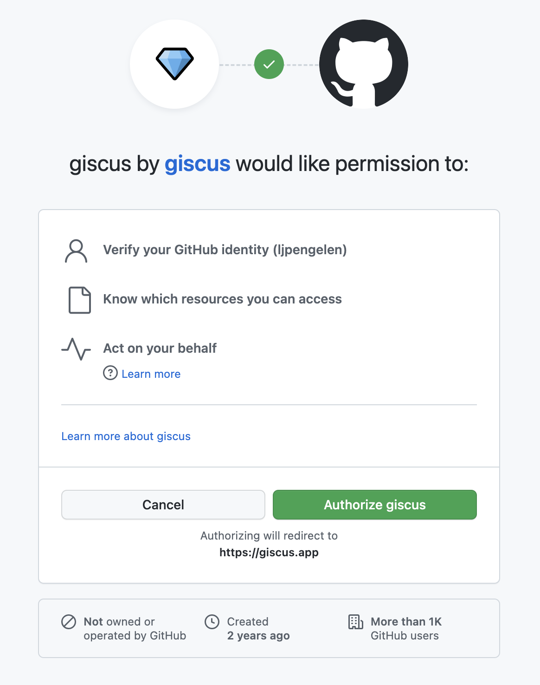

This page demonstrates Tiny Giscus, a minimalistic alternative to giscus. Giscus is a comment system powered by Github Discussions, and so is Tiny Giscus. Giscus is inspired by utterances, which is a comment system powered by Github Issues.
I think the idea behind utterances is brilliant. However, there are two reasons why I'd prefer giscus over utterances. First, GitHub Discussions seem like a better fit for a comment system than GitHub Issues. Second, utterances doesn't seem to be actively developed anymore.
Giscus has more features than Tiny Giscus, hence the name. There's only one thing that kept me from using it, which is the permissions it requests.
Gicus needs to be able to comment on discussions on my behalf and react to discussions and comments. However, I can't tell from the permissions screen above what actions I'm allowing it to perform in my name. I don't know who's to blame for this. Maybe it's not possible to request fine-grained permissions. Maybe giscus only requests the permissions I just mentioned, but GitHub's permissions screen is not detailed enough to reflect that. Either way, I didn't feel good about this, and I didn't want to dive into its source code.
There are quite a few comments systems. Some of them are paid, and I'd like to avoid spending money. Some of them set the type of cookies that require me to put up a cookie banner, which I'd like to avoid. Some of them require hosting, which I'd also like to avoid. Some of them have dubious reputations when it comes to respecting privacy, which I don't like.
Using Tiny Giscus requires five things:
<div class="tiny-giscus"
data-access-token="ACCESS_TOKEN"
data-repo-owner="REPOSITORY_OWNER"
data-repo-name="REPOSITORY_NAME"
data-discussion-number="DISCUSSION_NUMBER"
data-max-comments="10"
data-max-replies="10">
<a class="tg-button"
href="https://github.com/REPOSITORY_OWNER/REPOSITORY_NAME/discussions/DISCUSSION_NUMBER">
Discuss this page on Github
</a>
</div>